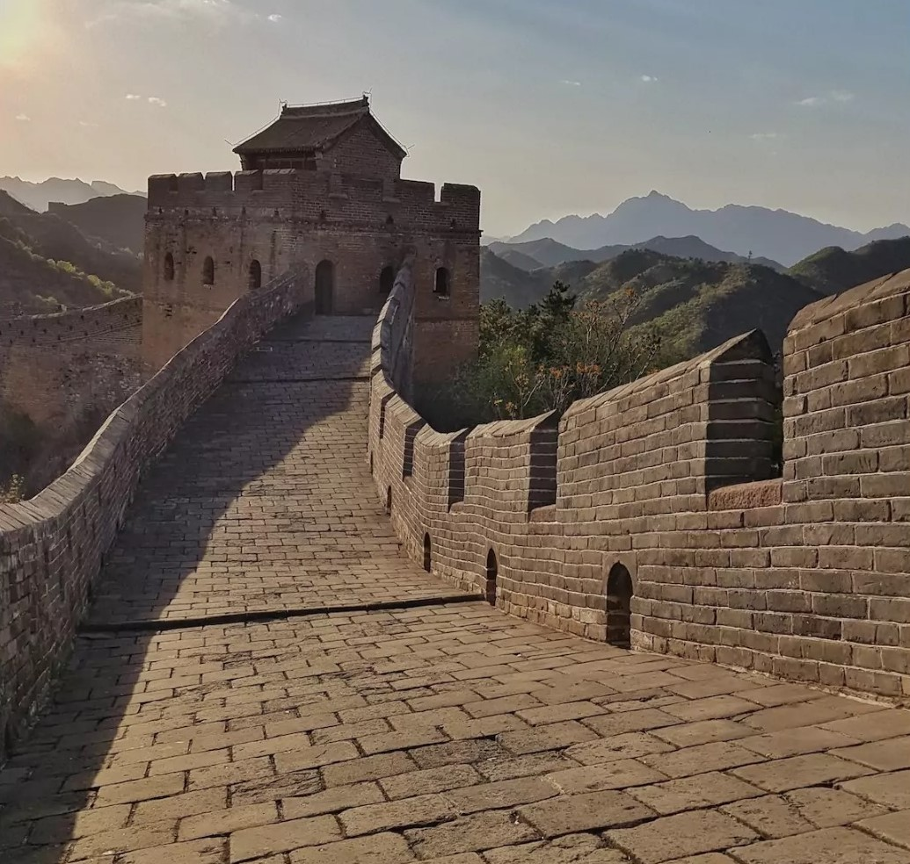
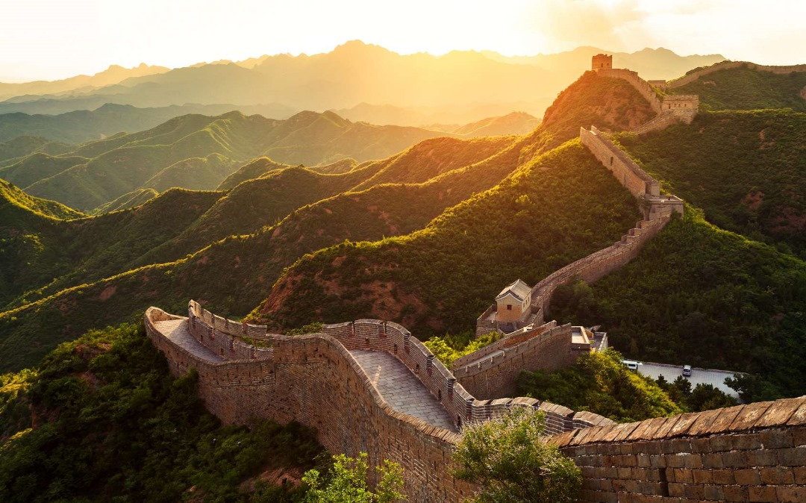

La Grande Muraille de Chine
Localisation
Histoire
Architecture
La Grande Muraille de Chine est un ensemble de fortifications militaires qui s’étend sur plus de 20 000 km à la frontière nord de la Chine. Elle commence à l’est à Shanhaiguan, dans la province du Hebei, et se termine à l’ouest à Jiayuguan, dans la province du Gansu12. Elle traverse des régions montagneuses, des déserts et des plaines, et suit le tracé des anciennes frontières entre les civilisations agricoles et nomades2. La Grande Muraille est classée au patrimoine mondial de l’UNESCO depuis 19872. Elle est considérée comme un symbole national de la Chine et de sa culture millénaire
Si le terme « Grande Muraille » désigne principalement aujourd'hui les fortifications érigées pendant la dynastie Ming, plusieurs murailles construites lors des dynasties précédentes ont porté ce titre, les frontières de la Chine évoluant avec le temps. Six sections de la muraille portent des noms spécifiques : Badaling8, qui couvre environ 80 km au nord-ouest de la ville de Pékin dans le xian de Yanqing. La portion du mur qui traverse Badaling a été construite pendant la dynastie Ming ; Grande muraille de Hushan, partie la plus orientale initialement construite en 1469 sous la dynastie Ming ; Mutianyu située dans le district de Huairou, à 70 km au nord-ouest de Pékin, datant du milieu du vie siècle ; Simatai située dans le xian de Miyun, à environ 120 km de Pékin en direction de Chengde. Bâtie initialement en 550-577, elle fut reconstruite en 1368-1398 sous la dynastie Ming et n'a pas fait l'objet depuis d'importantes restaurations ; Huangyaguan, petite section de la muraille située dans le nord du xian de Ji, dans la municipalité de Tianjin, à environ 126 km de la zone urbaine. Le site se trouve sur une crête de montagne escarpée et abrupte. La première construction date d' il y a environ 1 400 ans durant la dynastie Qi du Nord ; Jinshanling, section de 10,5 km située à 120 km au nord-est de Pékin et à une dizaine de kilomètres au sud-est du col de Gubei (province du Hebei). Elle a été construite en 1570 sous la dynastie Ming. Traditionnellement, on divise l'histoire de la construction de la Grande Muraille en deux parties : l'une précédant l'unification de la dynastie Qin (221 av. J.-C.) lors de la période des Printemps et des Automnes et la période des Royaumes combattants, où les divers États et royaumes qui divisaient la Chine érigent des murs de terre à leurs frontières ; l'autre débutant lors de l'unification de la dynastie Qin, où l'empereur Qin Shi Huang commence la construction d'un grand mur de « dix mille lieues de long » à la frontière nord.
La Grande Muraille est la plus longue construction humaine au monde. Elle parcourt environ 6 700 kilomètres. Des études par satellite ont montré que de nombreux segments, d'une longueur totale d'environ 1 000 kilomètres, étaient de nos jours enfouis sous terre. Sa largeur varie entre cinq et sept mètres en moyenne et sa hauteur entre cinq et dix-sept mètres. Elle est ponctuée de tours de guet carrées (hautes de 15 m au moins, distantes en moyenne de 75 m, soit la distance de deux portées de flèche10) et de bastions sur toute sa longueur. Elle est impressionnante sur les milliers de kilomètres proches de Pékin, la capitale. Elle se réduit ailleurs et ressemble à une imposante levée de terre à certains endroits. Elle a été fabriquée avec de la pierre, du ciment, de la terre, des briques d'argile. Il a été découvert récemment qu'il avait été incorporé 3 % de riz gluant dans le mortier ce qui avait considérablement renforcé sa résistance11. En revanche les mêmes études n'ont révélé aucune présence d'éléments osseux dans ce mortier contrairement à la légende, qui disait que sa solidité et sa blancheur était liée à la présence d'os humains.
